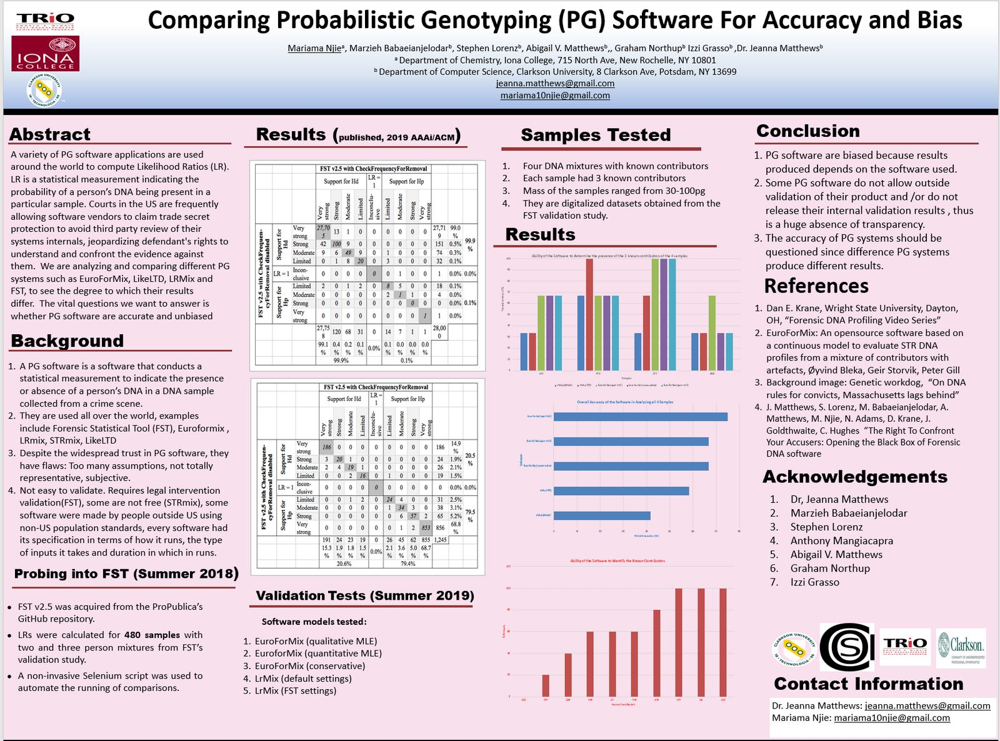

Subproject 1: DNA Database
The FST validation database contains the DNA samples used by the Office of the Chief Medical Examiner (OCME) of New York to validate the Forensic Statistical Tool, FST (a forensic DNA software). It is a database that contains more than 500 DNA samples. It includes details about the mode of collection of the samples, their sources, electropherograms, etc. This project focused on digitalizing the electropherograms of about 467 samples in the database. The aim is to use the digitalized dataset to validate different forensic DNA software. For forensic DNA software to successfully run, they must be fed with reliable inputs. These inputs are the DNA data of both the suspect (reference DNA) and that of the crime scene sample (evidence DNA). The inputs can be in the form of electropherograms, csv files, just to name a few. Some software (EuroForMix, LRmix, for example) take inputs in the form of csv files. For that reason, the digitized dataset is saved as csv files. The 467 samples in the database exist in different forms (blood, saliva, skin cells, etc.), in different conditions (degraded or not), have varying numbers of known contributors (2-4 known contributors), different masses (12-510pg), etc. The documentation of the digitization process can be found . here.
Subproject 2: Comparision of software models: FST, EuroForMix Vs. LikeLTD, LrMix
A variety of PG software applications are used around the world to compute Likelihood Ratios (LR). LR is a statistical measurement indicating the probability of a person’s DNA being present in a particular sample. Courts in the US are frequently allowing software vendors to claim trade secret protection to avoid third-party review of their systems internals, jeopardizing defendants' rights to understand and confront the evidence against them. We analyzed different PG systems such as EuroForMix, LikeLTD, LRMix, and FST, to see the degree to which their results differ. A summary of the methods, results, and conclusion is provided below. Two publications under this space are provided below:
AIES paper 2019
AAIES PAPer 2020

Subproject 3: Using machine learning to determine the number of contributors in a DNA sample
The number of contributors
(NoC) of a DNA sample is a very important factor used by forensic DNA software
to determine the source of a DNA sample. Many approaches have been taken in the
determination of NoC, including manually looking at the DNA profile, using
probabilistic methods, and using machine learning algorithms. In this project,
the NoC realm is approached using machine learning algorithms. Different
machine learning functions and trees were explored and experimented with to
determine the best algorithm for NoC determination. This algorithm was found to
be the Random Forest. Important forensic DNA topics were then explored using
this algorithm. These topics include the impact of number of replicates, different
masses, and height thresholds on the determination of the NoC. Generally, it
was found that although replicates of the same sample have the same source,
they can have different NoCs (Study 1). This occurrence was especially profound
when the source of the samples was blood.
Find OUT MORE